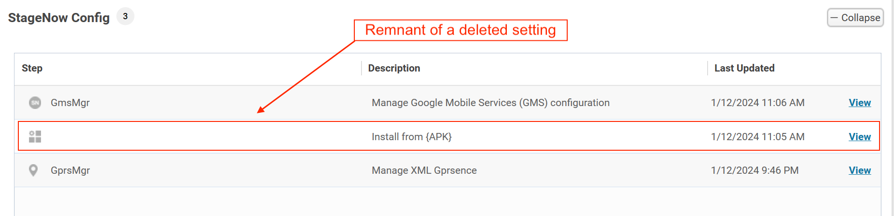
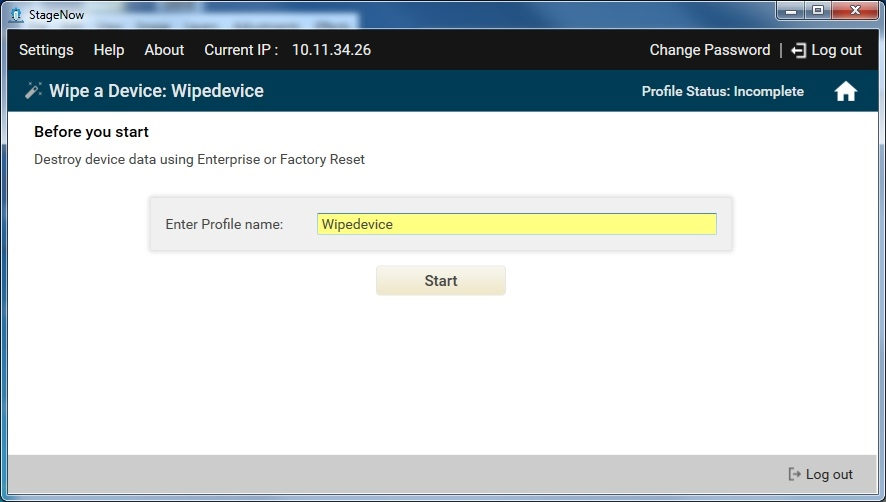
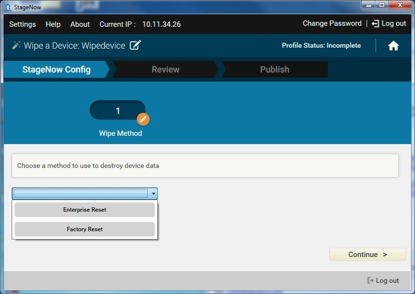
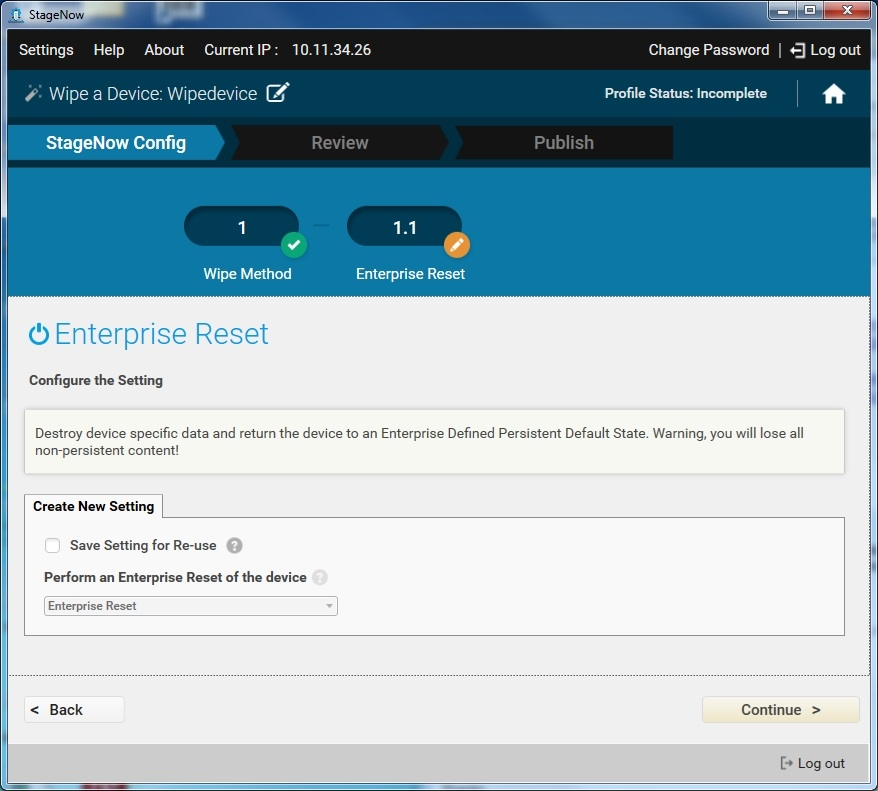
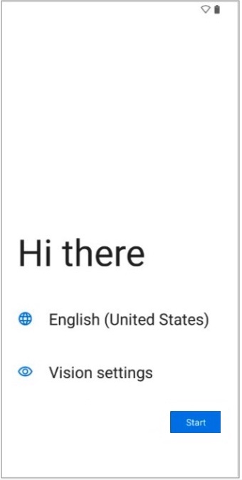
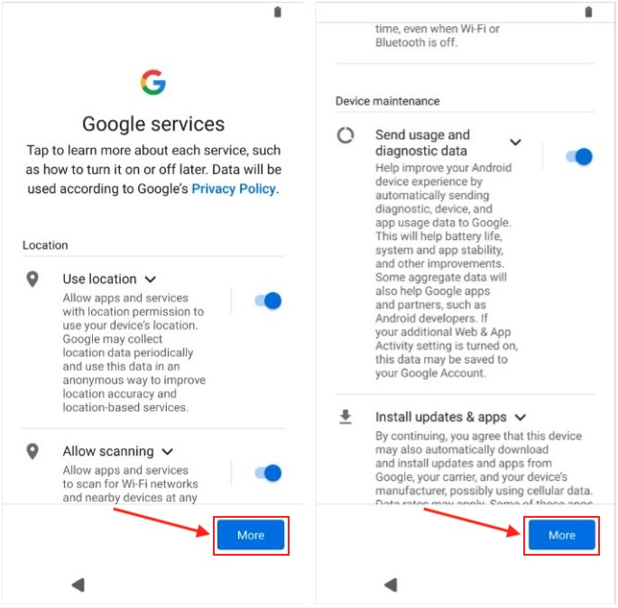
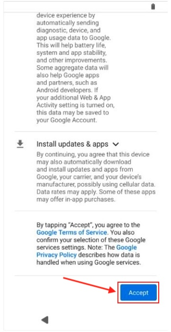
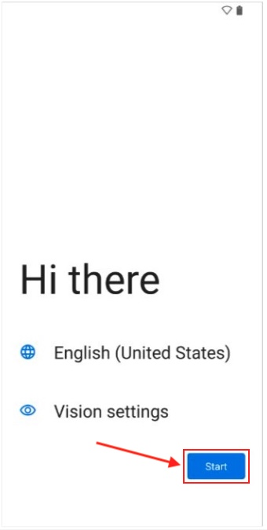

概要
このウィザードを使用して、[工場出荷時へのリセット] (すべてのデータ) または [エンタープライズ リセット] (非永続データのみ) を使用してデバイスのデータを消去します。リセット アクションに関するその他の重要な情報を参照してください。
セットアップ ウィザードのバイパスに関する注
Android セットアップ ウィザードは、インストールされている Android バージョンと Zebra の更新に応じて、初期デバイス セットアップ中に完全または部分的にバイパスできます。
詳細については、「セットアップ ウィザードのバイパス」セクションを参照してください。
プロファイル ウィザードの動作について
プロファイル ウィザードによって自動的に作成された設定は、それらの設定の 1 つ以上を手動で削除した場合でも、プロファイルから完全に削除されないことがあります。これは、ウィザードベースのプロファイルに対して、さらに Xpert モードを使用して作成した設定を追加した場合に発生します。削除した設定の一部が表示されたままになることがありますが、管理者がそれらにアクセスすることはできません。ただし、プロファイルの実行時にそれらの設定が適用されることはなく、プロファイルはそれ以外の点では正常に動作します。

画像をクリックすると拡大表示され、Esc キーを押すと終了します。デバイスのワイプ
[デバイスのワイプ] プロファイルを作成する方法:
[新しいプロファイルの作成] を選択します。
ドロップダウン メニューから MX のバージョンを選択します。
[デバイスのワイプ] ウィザードを選択し、[作成] を選択します。

プロファイルの名前を入力します。[開始] を選択して続行します。

注: プロファイル作成時に、ウィンドウの右上隅にあるインジケータに作成のステータスが表示されます。
目的の消去方法を選択します。[続行] を選択して続行します。
- デバイス固有のデータを破棄してデバイスを永続デフォルト状態に戻すには、[エンタープライズ リセット] を選択します。非永続データはすべて破棄されます。
- すべてのデータを破棄してデバイスを工場出荷時のデフォルトに戻すには、[工場出荷時へのリセット] を選択します。ユーザー コンテンツは保持されません。

必要な情報を選択し、[続行] を選択します。詳細については、「設定タイプ/電源」を参照してください。
[続行] を選択して、[確認] ウィンドウに進みます。
セットアップ ウィザードのバイパス
Zebra デバイスで Android セットアップ ウィザード (SUW) をバイパスするプロセスは、Android や MX のバージョンによって異なり、デバイスに最新の Zebra OS の更新や拡張機能が含まれているかどうかによっても異なります。どのような場合でも、開封後すぐにバーコードをスキャンすることで (または工場出荷時リセット後)、管理者がデバイスで SUW を経て、デバイス プロビジョニングを完了するために手動で行う必要のある操作をなくすか、大幅に削減できます。
バイパス動作は、次の 3 つのデバイス カテゴリに分類されます。
- LifeGuard および/または MX 更新が含まれている、Android 13 以降を搭載したデバイス (下の表を参照)
- Zebra の最新の更新が含まれていない、Android 13 以降を搭載したデバイス (非推奨)
- Android 11 以前を搭載したデバイス
バイパスの強化
更新がロードされているデバイス (以下の表に記載)は、次のように動作します。
- すぐに使用できる状態、または工場出荷時リセット後:
- StageNow バーコードのスキャン後、または
.binファイルの適用後*、Google で必要なほとんどの操作をバイパスできます (個別の「バイパス」バーコードは不要)
- StageNow バーコードのスキャン後、または
- 将来のエンタープライズ リセット後:‡
- 保持された構成プロファイル (存在する場合) が再適用されます
- ステージング プロファイルで PowerMgr SUWBypass が「true」に設定されている場合、SUW は完全にバイパスされます
- 手動操作の必要なく、デバイスが Android ホーム画面を起動します
*Zebra DNA Cloud または StageNow、あるいは Zebra OEMConfig を使用して EMM システムで作成されたバーコードまたは .bin ファイルにのみ適用されます。このセットアップ ウィザードのバイパス方法では NFC ステージングはサポートされません。.bin ファイルは USB (/StageNow) またはデバイス ストレージ (/sdcard/StageNow) から適用されます。フォルダ名では大文字と小文字が区別されます。
‡ 初期プロビジョニング後。
必要な更新
上記のバイパス拡張機能を利用するには、次の更新が必要です。
Zebra では、これらの更新をできるだけ早くデバイスに適用することを強くお勧めします。
| デバイス プラットフォーム | Android 13 LifeGuard 更新、MX バージョン | Android 14 LifeGuard 更新、MX バージョン | Android 15 LifeGuard 更新、MX バージョン |
|---|---|---|---|
| 2290 | N/A | 2026 年 2 月、MX 15.1.0.25 以降 | N/A |
| 4490 | 2026 年 3 月、MX 15.1.0.25 以降 | 2026 年 1 月、MX 15.1.0.22 以降 | MX 15.1.0.3 以降 |
| 6375 | 2026 年 3 月、MX 15.1.0.25 以降 | 2026 年 1 月、MX 15.1.0.22 以降 | N/A |
| 6490 | 2026 年 3 月、MX 15.1.0.25 以降 | 2026 年 1 月、MX 15.1.0.22 以降 | MX 15.1.0.3 以降 |
| 6690 | N/A | N/A | MX 15.1.0.3 以降 |
| SD660 | 2026 年 3 月、MX 15.1.0.25 以降 | 2026 年 2 月、MX 15.1.0.20 以降 | N/A |
関連項目:
Android 13 以降の SUW バイパス
重要:
以下の手順は、上の表のように更新されたデバイスに適用されます。上記のように更新されていないデバイスでは、ステージング中に手動による追加の操作が必要になります。また、以降のエンタープライズ リセットの後に、これらの操作を繰り返す必要があります。
新しいデバイスまたは工場出荷時リセットを行ったデバイスを最初に起動する際は、次の手順に従ってください。
[こんにちは] 画面が表示されるまで待ちます:

通常どおりにプロビジョニングを開始します (バーコードまたは
.bin fileを使用)。これにより、Google が必要とする手動操作のほとんどをバイパスできます。次の 2 つの画面で設定を確認し、必要に応じて変更します。
各画面の設定が終了したら [詳細] をタップして、次の画面にスクロールします:
3 番目の画面で、[同意する] をタップし、Google の利用規約とプライバシー ポリシーに同意します:

StageNow が自動的に起動し、プロビジョニングを続行できるようになります。
Android 11 以前の SUW バイパス
MX 9.1 ～ MX 11.9 を搭載したデバイスでは、Android セットアップ ウィザードをバイパスするためのバーコードが StageNow バーコードに埋め込まれ*、バイパスとデバイス構成が 1 つの手順に統合されています。以下のプロセスとルールは、MX 9.1 より前のバージョンのデバイス用に生成されたバーコードに適用されます。
手動でステージングする場合は、Android 6 ～ 11 を搭載したデバイスで、ウィザードの任意の段階で下記のバーコードをスキャンすることで、Android セットアップ ウィザードをスキップできます。Android 8 以降を搭載したデバイスでは、バーコードをスキャンすると、Android および Zebra のセットアップ ウィザード (分析のオプトアウトを含む) がバイパスされます。[Android セットアップ] ウィザードの作業が途中の場合は、バイパスのスキャンの前に入力されたデータが適用されます。
* Zebra DNA Cloud、および Zebra OEMConfig を使用する EMM システムで生成されたバーコードにも適用されます。
新しいデバイスまたは工場出荷時リセットを行ったデバイスを最初に起動する際は、次の手順に従ってください。
[こんにちは] 画面が表示されるまで待ちます:
Android セットアップ ウィザード全体をスキップするには、以下のバーコードをスキャンします。
[こんにちは] 画面が表示されたままの場合は、[開始] ボタンを押します。

Android 11 以前: Android ホーム画面が表示されたら、ご希望のプロセスでデバイス プロビジョニングを開始できます。
バイパスの制限
Scan-to-Bypass は次の Zebra デバイスおよび最低限の BSP でのみサポートされています。
- TC51、TC56、TC70x および TC75x:
- LG パッチ 8 を含むフル イメージの
01-21-04.1-MG(BSP21) 以降が搭載された Android Marshmallow
- LG パッチ 8 を含むフル イメージの
- MC3300、TC51、TC56、TC70x、TC75x および VC80x:
- フル イメージの
01-01-49NG-00-A(BSP49) 以降が搭載された Android Nougat
- フル イメージの
- TC20/TC25 デバイス:
- フル イメージの
04-14-30-0-NG-00-M1以降が搭載された Android Nougat
- フル イメージの
IMPORTANT NOTES
- MX 7.1 以降を搭載したデバイスでは、Power Manager CSP を使用したエンタープライズ リセットの後に、Android セットアップ ウィザード (「ようこそ画面」ともいいます) を自動的にバイパスすることができます。Power Manager のセットアップ ウィザードのバイパス パラメータの詳細を参照してください。
- Android 6 ～ 11 を搭載したデバイスでは、ウィザードが表示されたとき、またはその後の任意のタイミングでバーコードをスキャンすることで、Android セットアップ ウィザードをスキップすることもできます。詳細については、下記の「セットアップ ウィザードの手動でのバイパス」セクションを参照してください。
- MX 9.0 を搭載したデバイスでは、ステージング用に作成されたすべての
.binファイルの処理によって、セットアップ ウィザードがバイパスされます。 - MX 9.1 以降を使用するデバイスでは、バイパス バーコードのスキャン時に行われるセキュリティ チェックにより、StageNow プロファイルが MX 9.1 以降を使用して作成された場合のみバイパスが実行されるようになります。
その他のメモ
- Android セットアップ ウィザードのバイパスは GMS デバイスにのみ適用されます。GMS 以外のデバイスには SUW が採用されていません。
- Scan-to-bypass 機能は、前述のものより新しいすべての BSP に搭載されています。
- デバイス内の BSP を表示するには、[設定] > [デバイス情報] > [ビルド番号] に移動します。
デバイスのアップデート
バイパス バーコードで使用するためにデバイスをアップデートするには、以下の該当するページにアクセスして、指示に従ってください。
- TC51、TC56、TC70x、TC75x OS の更新ページ - Android M、N 以降
- MC33 OS の更新ページ - Android N 以降
- VC80x OS の更新ページ - Android N 以降
- TC20/TC25 OS の更新ページ - Android N 以降
Android 6 ～ 11 のみ
セットアップ ウィザードの任意の部分で以下のバーコードをスキャンすると、SUW の残りの部分がスキップされ、Android ホーム画面が開き、StageNow クライアントが実行されます。これにより、デバイスステージング バーコードをスキャンしてデバイスをセットアップできます。
SUW バイパス バーコードをスキャンすると、Google プライバシー ポリシーおよび Google 利用規約に同意したことになります。